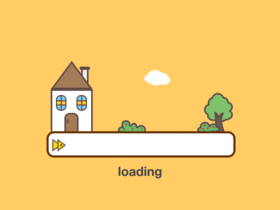

<!DOCTYPE html>
<html>
  <head>
    <meta charset="utf-8">
    <meta name="viewport" content="width=device-width,initial-scale=1.0">
    <script src="https://unpkg.com/axios/dist/axios.min.js"></script>
    <!--导入饿了么-->
    <link rel="stylesheet" href="https://cdn.jsdelivr.net/npm/bootstrap@3.3.7/dist/css/bootstrap.min.css" integrity="sha384-BVYiiSIFeK1dGmJRAkycuHAHRg32OmUcww7on3RYdg4Va+PmSTsz/K68vbdEjh4u" crossorigin="anonymous">
    <!-- 最新版本的 Bootstrap 核心 CSS 文件 -->
    <link rel="stylesheet" href="https://unpkg.com/element-ui/lib/theme-chalk/index.css">
    <script type="text/javascript" src="http://api.map.baidu.com/api?v=1.3"></script>
    <script type="text/javascript" src="http://api.map.baidu.com/api?v=2.0&ak=ZwiCfEi5XsqcD0xIZGRwdV8T"></script>
    <script type="text/javascript" src="http://api.map.baidu.com/library/CurveLine/1.5/src/CurveLine.min.js"></script>

    <link rel="stylesheet" href="./static/animate/animate.css">
    <link href="https://cdn.bootcss.com/font-awesome/4.7.0/css/font-awesome.min.css" rel="stylesheet">


    <title>拾笺</title>

    <style type="text/css">
      .el-pager li.active {
        color: #c1a174 !important;
        cursor: default;
      }
      .el-pager li:hover{
        color: #c1a174 !important;
        cursor: default;
      }
      .btn-next:hover{
        color: #c1a174 !important;
      }
      .btn-prev:hover{
        color: #c1a174 !important;
      }


      #Loading {
        top: 50%;
        left: 50%;
        position: absolute;
        -webkit-transform: translateY(-50%) translateX(-50%);
        transform: translateY(-50%) translateX(-50%);
        z-index: 100;
      }
      @-webkit-keyframes ball-beat {
        50% {
          opacity: 0.2;
          -webkit-transform: scale(0.75);
          transform: scale(0.75);
        }
        100% {
          opacity: 1;
          -webkit-transform: scale(1);
          transform: scale(1);
        }
      }
      @keyframes ball-beat {
        50% {
          opacity: 0.2;
          -webkit-transform: scale(0.75);
          transform: scale(0.75);
        }
        100% {
          opacity: 1;
          -webkit-transform: scale(1);
          transform: scale(1);
        }
      }
      .ball-beat > div {
        background-color: #279fcf;
        width: 10px;
        height: 10px;
        border-radius: 100% !important;
        margin: 2px;
        -webkit-animation-fill-mode: both;
        animation-fill-mode: both;
        display: inline-block;
        -webkit-animation: ball-beat 0.7s 0s infinite linear;
        animation: ball-beat 0.7s 0s infinite linear;
      }
      .ball-beat > div:nth-child(2n -1) {
        -webkit-animation-delay: 0.35s !important;
        animation-delay: 0.35s !important;
      }
    </style>

  </head>
  <body>
    <div id="Loading">
      <!--<div class="loader-inner ball-beat" style="z-index: 101;">-->
        <!---->
      <!--</div>-->
      <div class="loader-inner ball-beat">
        <div></div>
        <div></div>
        <div></div>
      </div>
    </div>


    <div id="app"></div>
    <!-- built files will be auto injected -->

    <!-- jQuery文件。务必在bootstrap.min.js 之前引入 -->
    <script src="http://cdn.bootcss.com/jquery/1.11.1/jquery.min.js"></script>

    <!-- 最新的 Bootstrap 核心 JavaScript 文件 -->
    <script src="http://cdn.bootcss.com/bootstrap/3.3.0/js/bootstrap.min.js"></script>


  </body>
</html>
